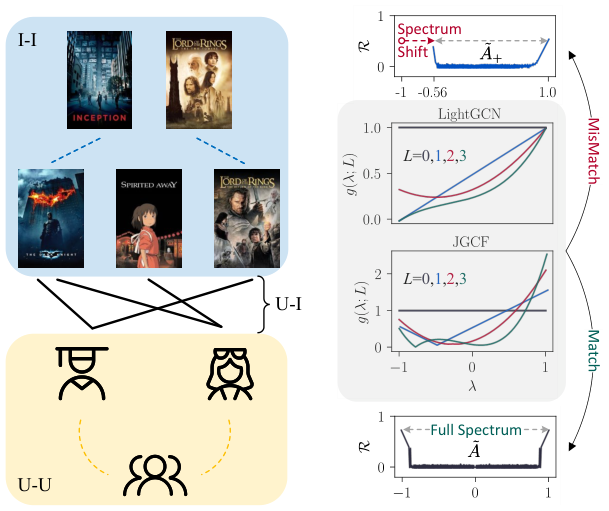

Collaborative Filtering Meets Spectrum Shift: Connecting User-Item Interaction with Graph-Structured Side Information (协同过滤遇上频谱偏移：连接用户-物品交互与图结构化辅助信息)
- 会议/期刊: KDD 2025
- 作者与机构: Yunhang He, Cong Xu, Jun Wang, Wei Zhang（华东师范大学 & 上海创智学院）
- 推荐链路定位: 召回（图协同过滤表征学习）
- 研究方向: 图神经网络与知识图谱推荐 / 多模态推荐
- 论文原文: https://arxiv.org/abs/2502.08071v2
- 开源代码: https://github.com/yhhe2004/SSC-KDD
TL;DR (1分钟核心速览)
将社交网络或多模态 κNN 相似图并入 U-I 二部图后，增广邻接矩阵的最高频率不再落在 \(-1\)，而是随辅助信息强度右移，导致 LightGCN/JGCF 等基于"全频谱\([-1,1]\)假设"的滤波器给错频率权重。本文提出 SSC：用平移因子\(\mu\)与缩放因子\(\Delta\)把偏移谱拉回\([-1,1]\)，数学上等价于直接对\(\tilde{A}_+\) 做仿射变换，零额外推理开销。在 3 个多模态与 2 个社交数据集、8:1:1 比例划分下，LightGCN+SSC 相对提升最高 23.33%（Baby R@10），并全面超越 FREEDOM、MMSSL、DSL 等专用模型。
Background & Motivation (背景与核心矛盾)
- 主流范式: 图协同过滤以 U-I 二部图为输入，LightGCN 等价于固定低通多项式滤波器，JGCF 用 Jacobi 基同时强调低频与高频；社交/多模态推荐则另设专用模块或辅助损失来注入辅助图。
- 前人局限: ① 专用模块（LATTICE 动态图、SHaRe 图重写、MMSSL 对比损失）与数据类型强绑定，换任务即失效，且对辅助信息噪声敏感（κNN 邻居增多时甚至劣于不用辅助信息）；② 直接把辅助图并入增广图 \(\tilde{A}_+\) 再套用 LightGCN/JGCF，性能仍不及专用模型。
- 核心洞察 (Key Insight): 作者用绝对 Rayleigh 商 \(\mathcal{R}(U_{:,\lambda};B)=|x^\top Bx|/x^\top x\)度量各频率对测试图\(B\)的重要性，发现随 κ 增大，\(\lambda_{\min}\)单调右移（κ-rescaling 收敛到\(\min(\lambda_{\min}(\tilde{S}),0)\)，κNN 收敛到\(\approx 0\)），而\(\lambda_{\max}\equiv 1\) 固定——全频谱假设崩塌，滤波器权重与真实重要性错配。
- 本文切入点: 不重设计滤波器，而是把偏移后的谱"搬回"滤波器预设的定义域，让现成频谱 GNN 直接复用。

Method (核心方法设计)
1. 整体框架 (Overall Architecture)
输入为交互矩阵 \(R\)与图结构化辅助信息（用户社交图\(S_U(\kappa)=\kappa S_U\)或物品多模态 κNN 平均图\(S_I(\kappa)\)），先拼成增广图\(A_+\)并做对称归一化得\(\tilde{A}_+\)；随后用幂迭代粗估\(\lambda_{\min}\)，算出\(\mu,\Delta\)并对\(\tilde{A}_+\)施加仿射校正；校正后的图直接喂入未改动的 LightGCN 或 JGCF 滤波器做\(L\) 层传播，最后以内积打分、BPR 损失训练。整个校正发生在构图阶段，训练与推理图规模不变。
flowchart TD
A["交互矩阵 R + 社交图 S_U(κ) / 多模态 κNN 图 S_I(κ)"] --> B["构造增广图 A+ 并对称归一化得 Ã+"]
B --> C["幂迭代估计 λmin → 计算 μ, Δ"]
C --> D["SSC 仿射校正 φ(Ã+) = (Ã+ − μI)/Δ"]
D --> E["LightGCN / JGCF 原滤波器 L 层传播"]
E --> F["内积打分 + BPR 训练"]2. 关键设计拆解 (Key Designs)
-
频谱偏移校正算子 SSC：痛点是滤波器 \(g(\lambda)\)按\([-1,1]\)设计，而\(\tilde{A}_+\)的谱被压缩到\([\lambda_{\min},1]\)。本文定义复合滤波\(g^+(\lambda)=g\circ\phi(\lambda)\)，其中\(\phi(\lambda)=(\lambda-\mu)/\Delta\)；取\(\mu=(\lambda_{\max}+\lambda_{\min})/2\)、\(\Delta=(\lambda_{\max}-\lambda_{\min})/2\) 即可精确还原全谱。关键恒等式是它无需特征分解： $\(\phi(\tilde{A}_+)=\frac{1}{\Delta}(\tilde{A}_+-\mu I).\)$ 直觉上这只是对邻接矩阵做一次"减均值除半宽"的标准化，把被辅助图压扁的谱重新拉伸，使低频/高频重新落到滤波器预期的响应区间。
-
因子估计与骨干适配：\(\lambda_{\max}\equiv 1\)已知，只需估\(\lambda_{\min}\)，利用\(1-\text{power\_iteration}(I-\tilde{A}_+)\approx\lambda_{\min}\)（100 次迭代）即可，几行代码完成。代入 LightGCN 得\(H=\sum_{l=0}^{L}\frac{1}{L+1}\left(\frac{1}{\Delta}(\tilde{A}_+-\mu I)\right)^l E\)；代入 JGCF 则把 Jacobi 基\(P_l^{a,b}\)的自变量换成\(\phi(\lambda)\)，从而在偏移谱上仍近似保持基的正交性。作者强调精确校正未必最优（真实变换比仿射更复杂），估计值只作为调参起点，在邻域内微调。
-
训练目标、负采样与推理效率：损失沿用标准 BPR，负采样为均匀采样（未引入额外难负样本策略）；SSC 不改变参数量、不增加图规模，训练时间与骨干几乎持平（Baby 上 LightGCN 4m42s vs +SSC 4m48s），远低于 FREEDOM（7m22s）与 MMSSL（28m22s）。
Experimental Setup & Evaluation Protocol (实验设置与评估协议)
- 数据集与预处理:
| 数据集 | #Users | #Items | #Interactions | 稀疏度/密度 | 特征/场景说明 |
|---|---|---|---|---|---|
| Ciao | 6,804 | 17,660 | 139,112 | 0.116% | 社交，含 106,433 条 U-U 边，剔除 <3 交互节点 |
| LastFM | 1,875 | 4,613 | 77,465 | 0.895% | 社交，25,182 条 U-U 边，剔除 <3 交互节点 |
| Baby | 19,445 | 7,050 | 160,792 | 0.117% | 多模态，CNN 视觉 + MiniLM 文本，5-core |
| Sports | 35,598 | 18,357 | 296,337 | 0.045% | 多模态，同上，5-core |
| Electronics | 192,403 | 63,001 | 1,689,188 | 0.014% | 多模态，同上，5-core |
- 数据划分与防穿越 (Splitting Strategy): 全部数据集采用 8:1:1 比例划分（训练/验证/测试），非 Leave-One-Out；超参在验证集上按 NDCG@20 选择。
- 排名评测协议 (Ranking Protocol): 采用 Full-Ranking 全库排序（对全部未交互物品打分），报告 Recall@{10,20} 与 NDCG@{10,20}；5 次独立运行做配对 t 检验，\(p\le0.05\)记
*、\(p\le0.01\) 记**。 - 对比基线与超参设置: 基线覆盖四类——传统 CF（MF-BPR、LightGCN、JGCF）、可学习多项式滤波（ChebyNet、JacobiConv）、多模态 SOTA（MMGCN、LATTICE、BM3、FREEDOM、MMSSL）、社交 SOTA（DiffNet++、DSL、SHaRe）。嵌入维度 \(d=64\)，batch size 2048，学习率搜\(\{1\text{e-}4,\dots,5\text{e-}3\}\)；κ 在多模态搜\(\{0,5,10,15,20\}\)、社交搜\(\{0,0.25,\dots,1.5\}\)，\(\mu\in[0,0.4]\)、\(\Delta\in[0.4,1.0]\) 步长 0.05。
Key Experimental Results (实验关键数据)
1. 主实验对比 (Main Results)
多模态推荐（节选 Baby / Sports，Full-Ranking）：
| 模型 | Baby R@10 | Baby R@20 | Baby N@20 | Sports R@10 | Sports R@20 | Sports N@20 |
|---|---|---|---|---|---|---|
| MF-BPR | 0.0417 | 0.0638 | 0.0284 | 0.0586 | 0.0885 | 0.0401 |
| LATTICE | 0.0562 | 0.0875 | 0.0388 | 0.0683 | 0.1024 | 0.0466 |
| FREEDOM | 0.0649 | 0.0991 | 0.0434 | 0.0715 | 0.1088 | 0.0479 |
| MMSSL | 0.0595 | 0.0929 | 0.0442 | 0.0667 | 0.1001 | 0.0482 |
| LightGCN | 0.0543 | 0.0851 | 0.0372 | 0.0633 | 0.0956 | 0.0432 |
| LightGCN+SSC | 0.0666 | 0.1044 | 0.0458 | 0.0762 | 0.1135 | 0.0513 |
| Improv.% | +22.61% | +22.69% | +23.20% | +20.40% | +18.77% | +18.78% |
| JGCF | 0.0563 | 0.0874 | 0.0385 | 0.0664 | 0.0999 | 0.0456 |
| JGCF+SSC | 0.0672 | 0.1019 | 0.0453 | 0.0783 | 0.1177 | 0.0529 |
| Improv.% | +19.34% | +16.55% | +17.71% | +17.92% | +17.82% | +15.94% |
社交推荐（Ciao / LastFM）：
| 模型 | Ciao R@10 | Ciao R@20 | Ciao N@20 | LastFM R@10 | LastFM R@20 | LastFM N@20 |
|---|---|---|---|---|---|---|
| DiffNet++ | 0.0482 | 0.0774 | 0.0379 | 0.2434 | 0.3320 | 0.2604 |
| DSL | 0.0532 | 0.0827 | 0.0409 | 0.2495 | 0.3375 | 0.2659 |
| SHaRe | 0.0519 | 0.0827 | 0.0409 | 0.2442 | 0.3352 | 0.2595 |
| LightGCN | 0.0473 | 0.0770 | 0.0381 | 0.2527 | 0.3430 | 0.2690 |
| LightGCN+SSC | 0.0547 | 0.0861 | 0.0431 | 0.2588 | 0.3502 | 0.2772 |
| Improv.% | +15.71% | +11.80% | +13.06% | +2.43% | +2.10% | +3.05% |
| JGCF | 0.0498 | 0.0778 | 0.0397 | 0.2555 | 0.3465 | 0.2736 |
| JGCF+SSC | 0.0543 | 0.0803 | 0.0413 | 0.2583 | 0.3504 | 0.2772 |
| Improv.% | +9.04% | +3.20% | +3.91% | +1.10% | +1.12% | +1.32% |
2. 消融实验 (Ablation Study)
原文未设传统"逐模块移除"消融，而以可学习滤波对照 + 因子敏感性替代，本质是验证"固定滤波器 + SSC"优于"端到端学滤波"：
| 配置 | Ciao R@20 | Ciao N@20 | Baby R@20 | Baby N@20 |
|---|---|---|---|---|
| ChebyNet（可学习） | 0.0722 | 0.0375 | 0.0609 | 0.0259 |
| JacobiConv（可学习） | 0.0726 | 0.0379 | 0.0716 | 0.0316 |
| LightGCN（无校正） | 0.0770 | 0.0381 | 0.0851 | 0.0372 |
| LightGCN+SSC | 0.0861 | 0.0431 | 0.1044 | 0.0458 |
\(\mu\)敏感性（Baby，\(\mu^*=0.1203\)）：\(\mu=0\)时 R@20 为 0.1033，\(\mu=0.1203\)时 0.1045，\(\mu=0.2\)时降至 0.1019；\(\Delta\)敏感性（\(\Delta^*=0.8797\)）：\(\Delta=1\)时 0.1032，\(\Delta=0.8\)时 0.1038，\(\Delta=0.6\) 时跌至 0.1006。
3. 关键实验发现 (Key Findings)
- 校正收益与辅助信息强度正相关：Baby 上 LightGCN+SSC 的 R@10 相对提升 22.61%，而 Electronics 仅 15.01%、LastFM 仅 2.43%——后者社交图信息量本就弱（SHaRe/DSL 甚至不如纯 LightGCN），说明 SSC 的增益主要来自"把有用的辅助谱重新对齐"，而非无差别注入。
- 固定滤波 + 校正胜过端到端学滤波：ChebyNet/JacobiConv 在 Ciao 上 R@20 仅 0.0722/0.0726，低于未校正 LightGCN 的 0.0770，更远低于 +SSC 的 0.0861，印证推荐场景下可学习多项式滤波训练不稳，而两参数仿射校正更鲁棒。
- 统一卷积框架带来抗噪性：多模态特征加高斯噪声 \(\delta>0.15\) 后 FREEDOM 性能显著下滑，而 LightGCN+SSC 几乎持平骨干；社交图伪造边比例升至 1.0 时 SHaRe 因自监督图重写形成噪声正反馈而恶化，SSC 因不引入额外图改写保持稳定。
Highlights & Limitations (亮点、对比与审稿批判)
- 与代表作对比 (vs. Prior Work): 与 LATTICE/FREEDOM 的"专图专用模块"相比，SSC 不区分辅助信息类型，一套仿射变换通吃社交与多模态；与 GUME 同样走增广图路线，但 GUME 沿用等权卷积、未对齐频谱，SSC 明确指出并修正了这一错配；与 ChebyNet/JacobiConv 的"学滤波"路线相比，SSC 只调两个标量，规避了训练不稳定性。
- 可迁移亮点: ① "先诊断谱、再仿射校正"的思路可直接迁移到任何在异构/增广图上复用二部图滤波器的场景（如 KG 增强、跨域共享图）；② 用 Rayleigh 商做频率重要性诊断，可作为评估任意图增强是否"谱兼容"的通用探针。
- 审稿级局限批判: ① 仍需额外调 \(\kappa,\mu,\Delta\) 三个超参，且论文承认精确谱校正未必最优、需在估计值邻域手工微调，自动化程度有限；② 实验全部为离线 Full-Ranking，缺少线上 A/B 与冷启动分桶验证，"缓解稀疏性"的核心动机未被直接量化；③ 仅验证 LightGCN/JGCF 两个骨干，对更深的可学习滤波或非对称辅助图（如有向社交）适用性未知。
Rating (四维评分)
- 方法创新性 (Novelty): ⭐⭐⭐⭐ （首次定量刻画增广图频谱右移并给出 κ-rescaling/κNN 两种构造下的理论收敛值，校正算子极简但洞察扎实）
- 评估协议与实验扎实度 (Protocol & Experiments): ⭐⭐⭐⭐ （5 数据集 × 2 骨干 × 4 类基线，Full-Ranking + 配对 t 检验齐全，但缺逐模块消融与线上验证）
- 写作与数学规范度 (Clarity & Rigor): ⭐⭐⭐⭐ （Rayleigh 商诊断与定理 3.1 推导清晰，仿射等价性证明简洁；超参估计部分坦承近似性，严谨）
- 工业落地与复现价值 (Industrial & Practical Value): ⭐⭐⭐⭐⭐ （零额外推理开销、几行代码即插即用、已开源，训练时间与骨干持平，工程落地门槛极低）